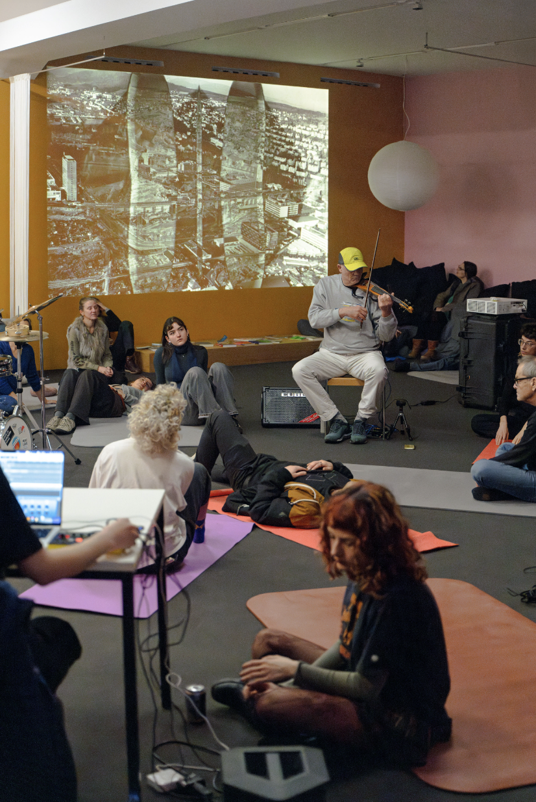

Animation Poster, 2024
Embodied Orchestra Kreis 5
Die Künstlerinnen und Kollaborateurinnen Jeanne van Heeswijk und Sophie Mak-Schram, als Teil einer wachsenden Gruppe aus der Umgebung des Migrosmuseum für Gegenwartskunst, haben Menschen, die sich im Streikhaus und Stadtorchester organisieren, eingeladen, gemeinsam an und mit den Schwellen des Museums nachzudenken.

Poster im Streikhaus, 2024
Flyer im Streikhaus, 2024
Im Namen des Orchesters durfte ich ein Plakat, sowie Flyer (vorder und Rückseite) für diese Konzertreihegestalten. Das Stadtorchester hat sich aus Stadt-Aktivist*innen und frei improvisierenden Musiker*innen gebildet. Es bezieht Stadtplanung und die von Menschen und Natur angeeigneten Brachenflächen mit ein.
Gemeinsam mit dem haben wir an drei verschiedenen Stationen durch Bewegungs- und Musikimprovisationen den Veränderungen unserer Stadt zugehört. Die Auseinandersetzung mit den Auswirkungen der Gentrifizierung im Kreis 5 spielten dabei eine zentrale Rolle.

Konzert im Migrosmuseum, 2024
Konzert im Migrosmuseum, 2024
Konzert im Migrosmuseum, 2024
----------------- ähnliche Projekte -----------------